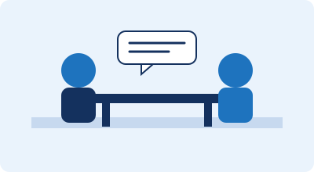

Student Support
Careers & Employability Support
Starting university can feel like a lot at once. The University's employability and careers service, Zone29, is here to help you build skills, explore career options and prepare for opportunities — from your very first term through to graduation. Most job searching, appointment booking and personalised support happens through Zone29's online platform, CareerZone.
Ways We Can Help
- One-to-one careers appointments, booked through CareerZone
- CV, cover letter and application support
- Mock interviews and assessment centre practice
- Employer talks, careers fairs and skills workshops
- The Westminster Award – a structured pathway for building your CV
- Future Ready Mentoring – matched with an industry professional
- Talent Bank – paid part-time roles within the University
- Volunteering opportunities that build transferable skills
- Support finding internships, placements and graduate schemes
- Help starting or growing a business through WeNetwork
Key Terms
A few terms you will see used throughout this site:
- Zone29
- The University of Westminster's employability and careers service, based at 29 Marylebone Road. It runs careers appointments, mentoring, events and enterprise support.
- CareerZone
- Zone29's online platform, used to search for jobs, book careers appointments and manage your employability activity in one place.
- Westminster Award
- A structured, self-paced scheme that recognises the skills and experience you build outside your course, such as volunteering, mentoring or work experience.
- CV (Curriculum Vitae)
- A short document summarising your education, skills and experience for employers.
- Cover letter
- A letter sent with your CV that explains why you are a good fit for a specific role.
Compare Your Options
Not sure what these terms mean yet? Choose one to see a short explanation.
Select a button above to see more information here.